"Sinful Spoils of Subversion - Snake Eye" embodies the very disaster of this world, an inescapable absurdity. It employs all means to stir people's desires and discard their souls, reducing them to mere puppets.
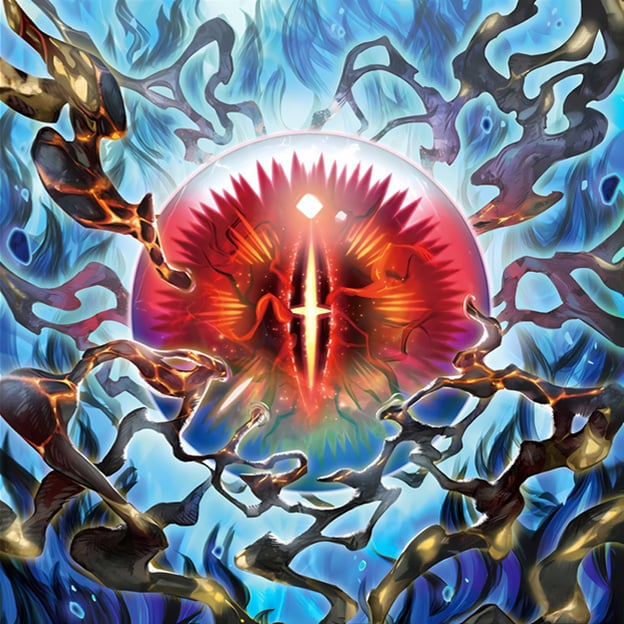
For those seeking only obedient tools, souls tainted by sin are superfluous. In this paradoxical world, both the taker and the taken coexist equally. Thus begins the battle to strip everything from the girl who has already lost everything.
Faced with abandonment and bearing the weight of the world's sins, she confronts the birth of a cursed "treasure" that brings various calamities. Its pitiful guise mirrors that of a lost soul wandering through eternal time.
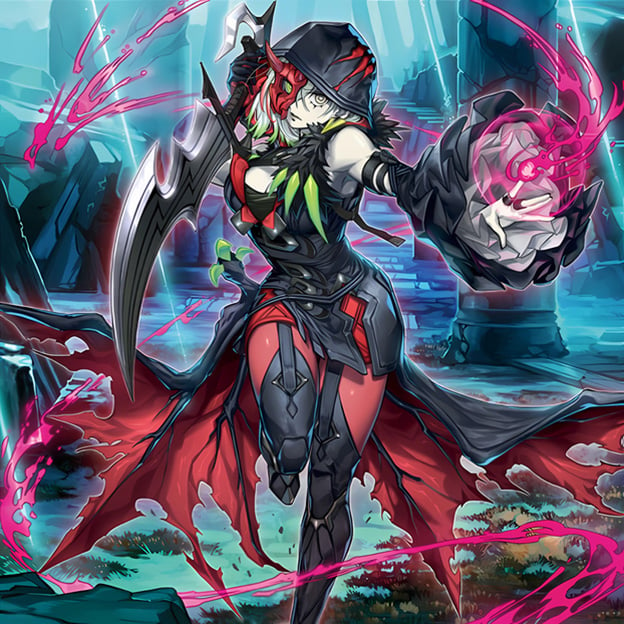
In the depths of an underground mall bar, whispers spread:
-"Have you heard of her? The one rumored to hunt Sin Treasures?"
-"Huh? Who?"
-"She's a treasure hunter specializing in cursed relics."
-"It's just a rumor. She deals with Sin Treasures too?"
-"People who've seen her swear it's true."
-"Just a myth..."
-"Wait, ever seen a Family Treasure?"
-"No, it's not that eerie. Oh, remember the building in Mukaihigashi?"
-"Strange. Someone met her gaze... Oh, leaving so soon?"
She was a grim figure.
-"Sin Treasure Hunter" Black Witch Dear Bellstar
A treasure hunter draped in black, wielding potent magic, she's dubbed a
"devil" for her ruthless tactics in securing her bounty. Her abilities surpass
those of ordinary humans, fueled by mysterious magic. Her enigmatic past
shrouded in secrecy, she's known simply as the "Treasure Hunting Demon."
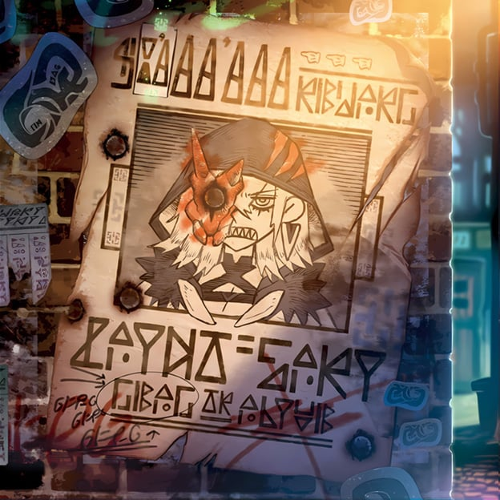
Guided by scant information on the Sinful Spoils, she journeys southeast from the underground mall, stumbling upon a crumbling ruin. Once a majestic temple, it now stands forlorn, corrupted by the sudden appearance of the Sinful Spoils "Snake Eye."
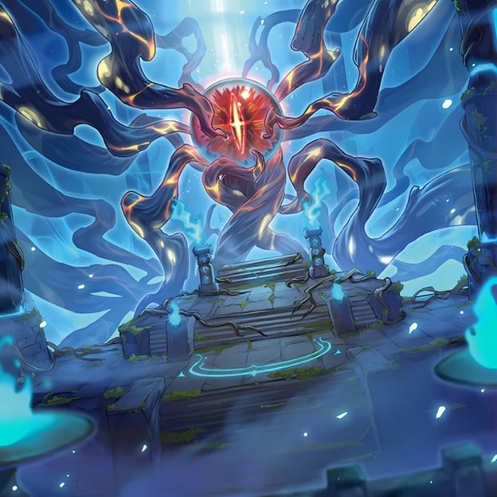
Clearing the one-eyed monsters that infest the area, she finally reaches the trail's end, where a colossal eye gleams red. The witch locks gazes with the peculiar creature – a signal for the hunt to commence. Suddenly, from the azure flames, a massive dragon materializes, roaring with delight at its long-awaited prey.
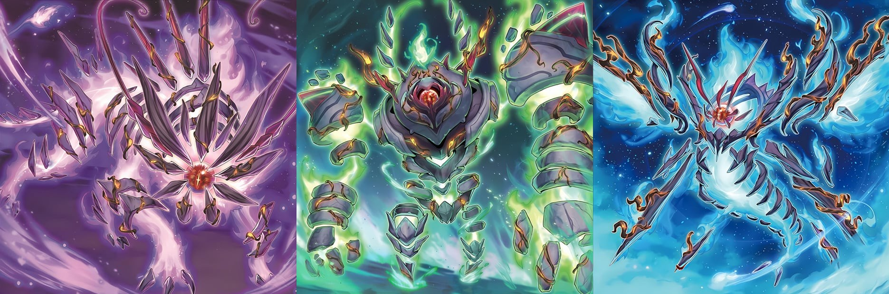
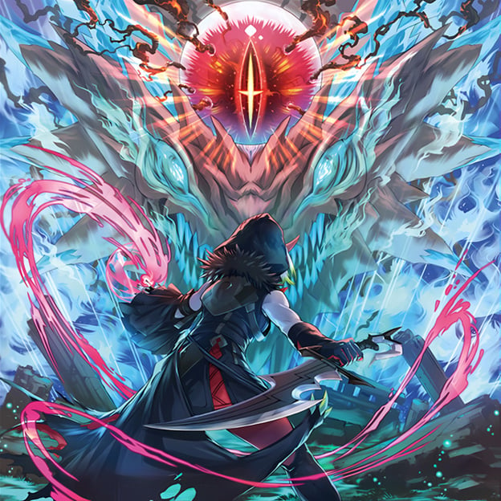
Once the guardian deity of this land, a giant dragon born from a sealed treasure now reigns over the Snake Eye Temple. Its ferocity surpasses its former self, spawning new creatures from the blue flames that emanate from its body. Those who meet its gaze find themselves paralyzed, unable to move. The Fire Dragon and its affiliates now nest within the temple, under its dominion.
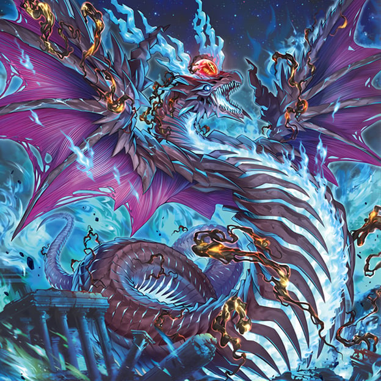
The Sinful Spoils possesssed by the Black Witch help her deal with the relentless onslaught of the giant dragon and its affiliates. Eventually, she manages to quell the raging blue flames of the Fire Dragon
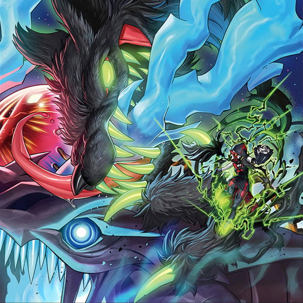
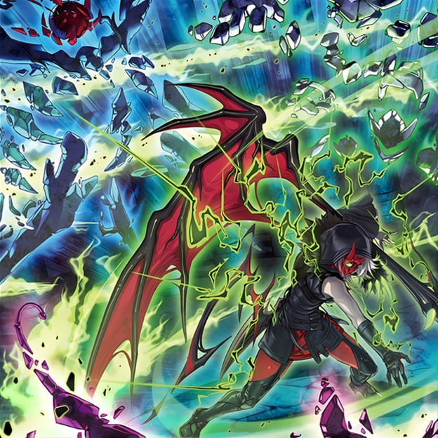
Believing victory is at hand, the Black Witch moves to claim the Sinful Spoil, only to witness countless cracks shatter its facade...
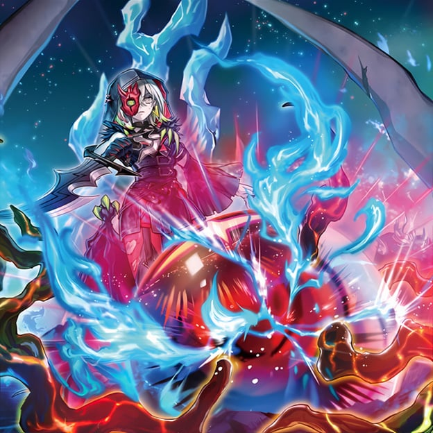
A mysterious entity is born from the "Original Sinful Spoil" Diabellstar is bewildered by this unexpected turn, yet she claims it as a "treasure." Lately, she's noticed magical items disappearing around her. Perhaps it's just her imagination, but she struggles to sleep well...
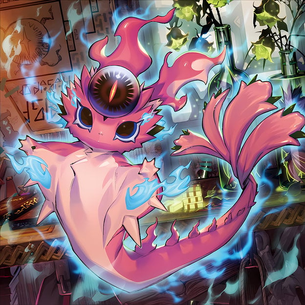
After retrieving Poplar that emerged from the Sinful Spoil, Diabellstar returns to the underground city where she's based.
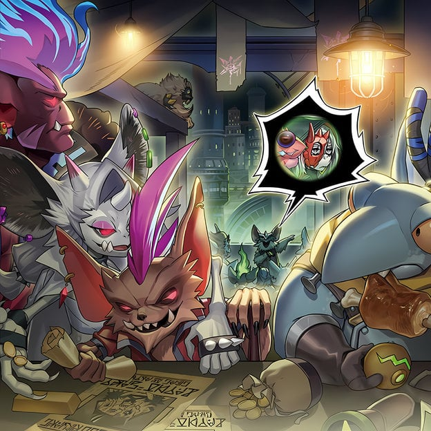
Just as she plans to research Poplar and rest briefly before seeking the next Sinful Spoil, a sudden explosion echoes, and numerous headlights pierce the darkness.
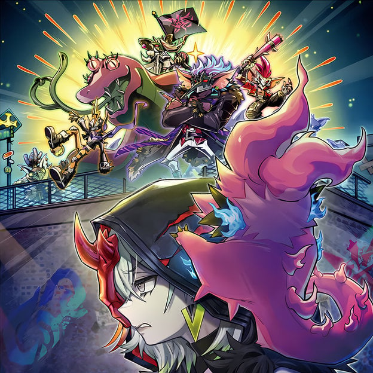
A motley crew of little demons, hailing from diverse backgrounds, rally around Gabonga, leader of an outlaw gang with their base next to a towering structure in the underground mall. They laboriously tame the roaming monsters of the area, fashioning them into customized vehicles each day! Driven primarily by profit, they've repeatedly clashed with bounty hunter Diabellstar, only to suffer resounding defeats... Realizing their inability to best Diabellstar, they now risk life and limb to pilfer the treasures she procures. Under the blood code known as the "Great Iron Rule of Goblin Bikers" they persistently rev the engines of their souls...
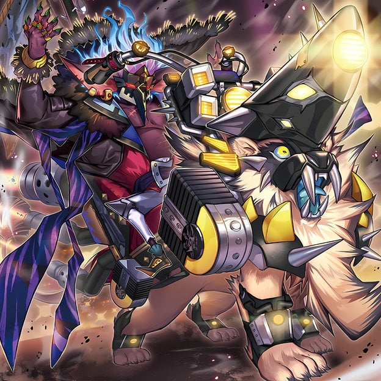
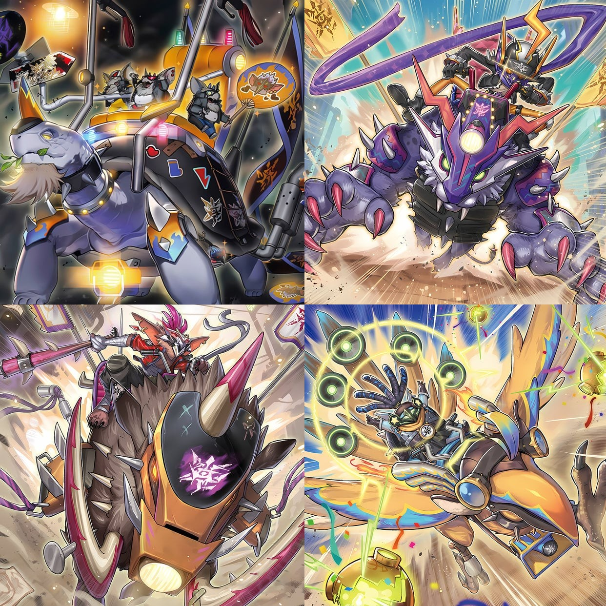
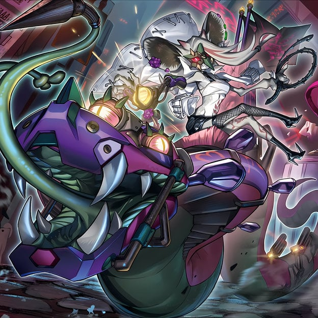
-"Hey, Black Witch! We've been waiting for you!"
-"It's you guys again..."
Thus, the battle commences.
-"That little kid the Black Witch is carrying looks like the Sinful Spoil on
the wanted poster!"
The goblins, eyeing the mysterious creature, manage
to seize Poplar, who slumbers peacefully through the chaos.
Meanwhile, the diversionary force engages the Black Witch.
However, their jubilation is short-lived. With a devilish expression, the
Black Witch smashes their comrades, their smiles contorting into fear.
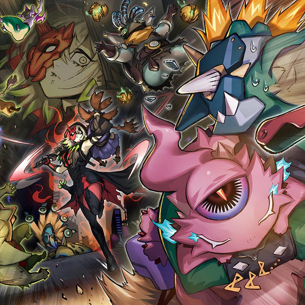
Sensing impending danger, leader Gabonga takes a risk. He unleashes the shackles of the "Hundred Demons' Great Beast," a fearsome demonic creature sealed within a warehouse at the wharf, and previously deemed unrideable even after capture. The colossal beast, rampaging indiscriminately, appears to have absorbed potent magical energy.
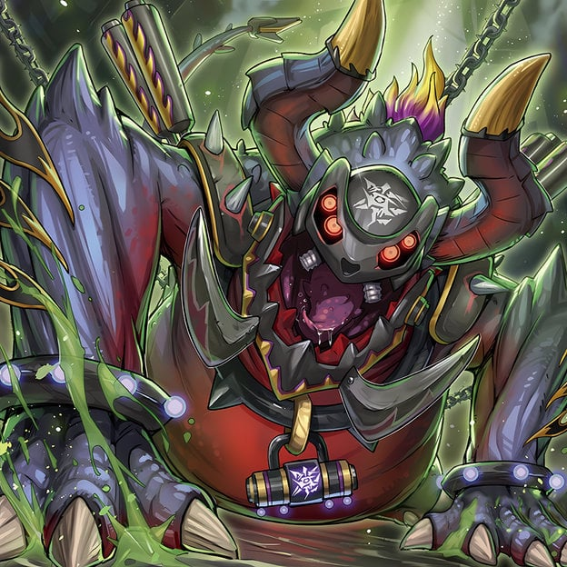
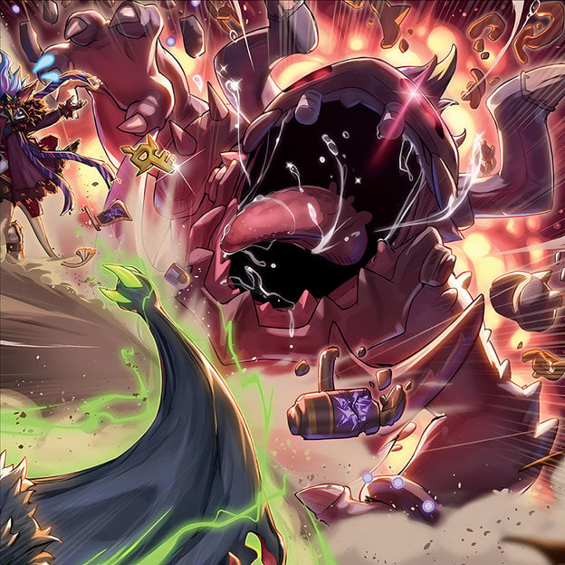
Amidst the chaos, Poplar who had been dozing, awakens. Awoken and famished, Poplar drawn to the magical essence of the "Sinful Spoils" challenges the formidable Great Beast to a battle of eat or be eaten! Despite the vast difference in size, Poplar consumes the Great Beast whole. But something feels amiss...!?
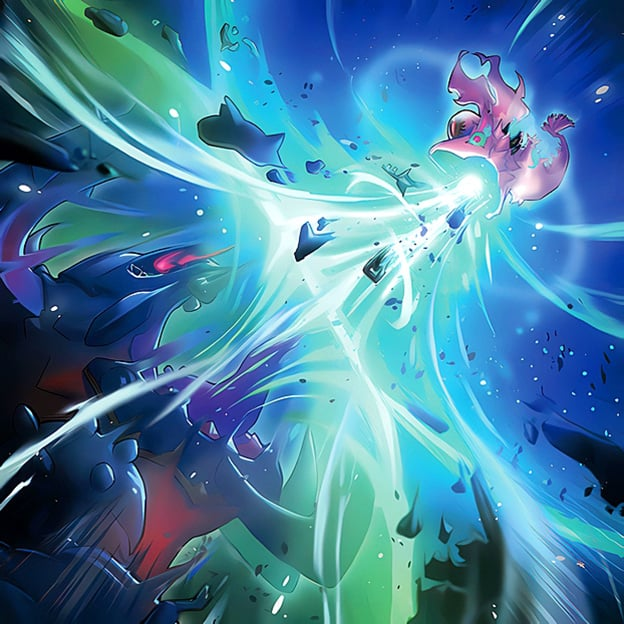
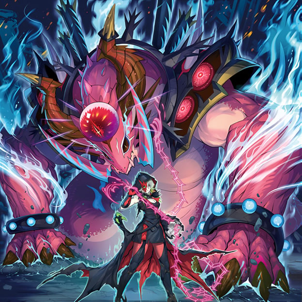
Suddenly, Poplar transformsa!!! Diabellstar swiftly restrains the frenzied Great Poplar and, unexpectedly, hurls it toward Gabonga and his cohorts with a mighty swing!!
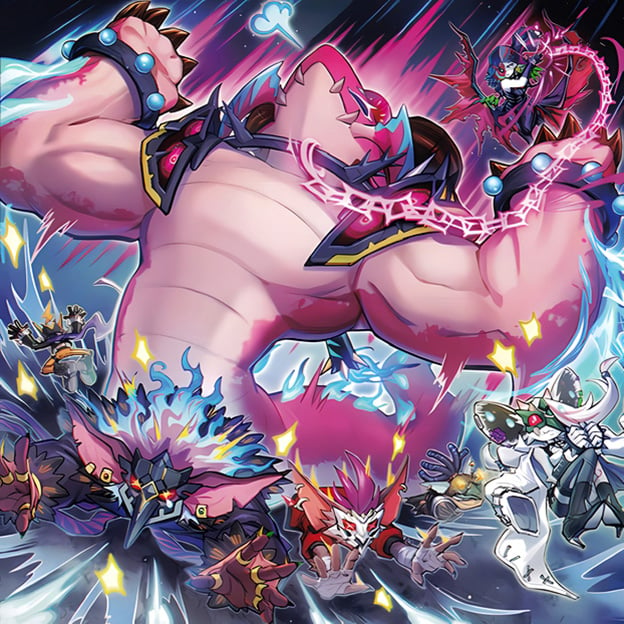
Diabelstar gazes blankly as the "Goblin Bikers" scatter and ignite, uttering their final words. The sudden appearance of a white shadow leaves Diabelstar with no chance. It seals the magical power of the Great Flame Demon.
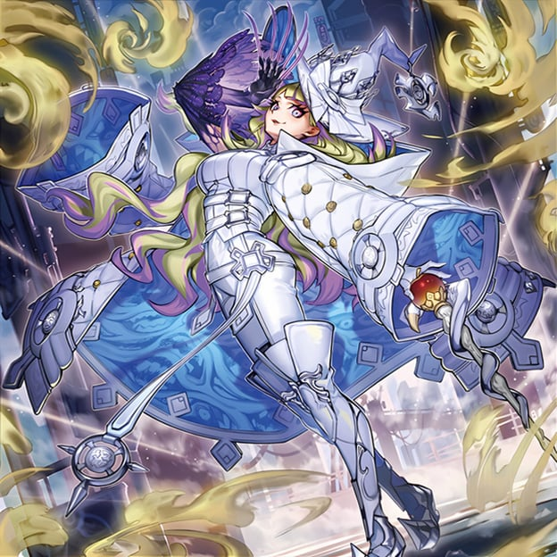
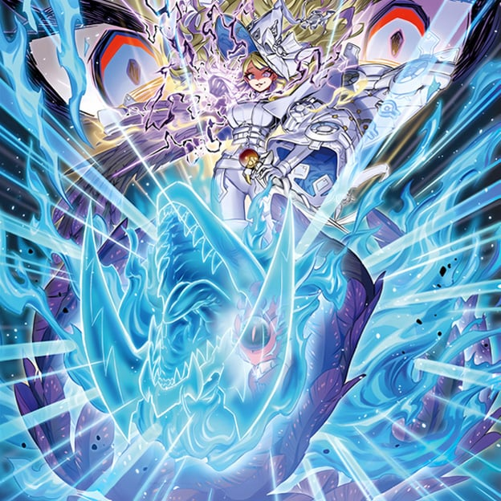
There's no mistaking that figure or that magical prowess. Another witch emerges onto the scene. "Skillfully manipulating the power of the Sinful Spoils, she steals the Flame Scale. Then, she lures Diabelstar into a deep sleep. As the hands of the stopped clock start to move again, the Sinful Spoil spins. It's the Sinful Spoil of Slumber - Morrian"
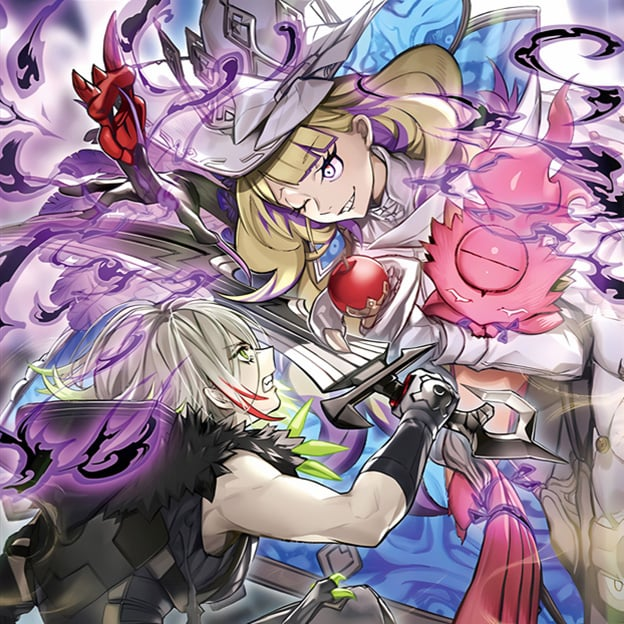
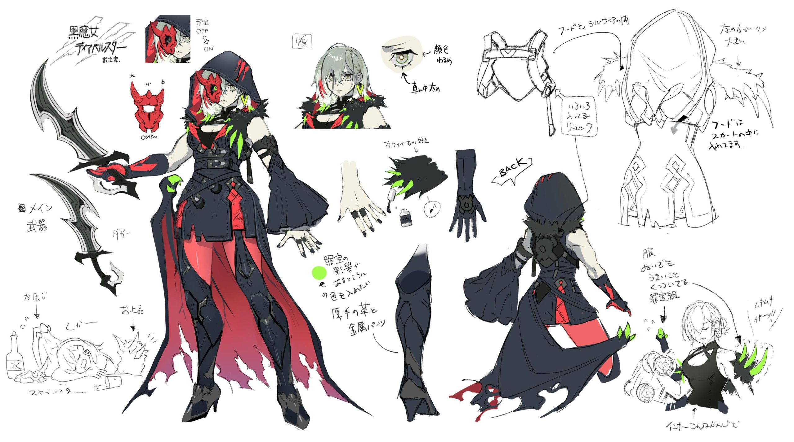